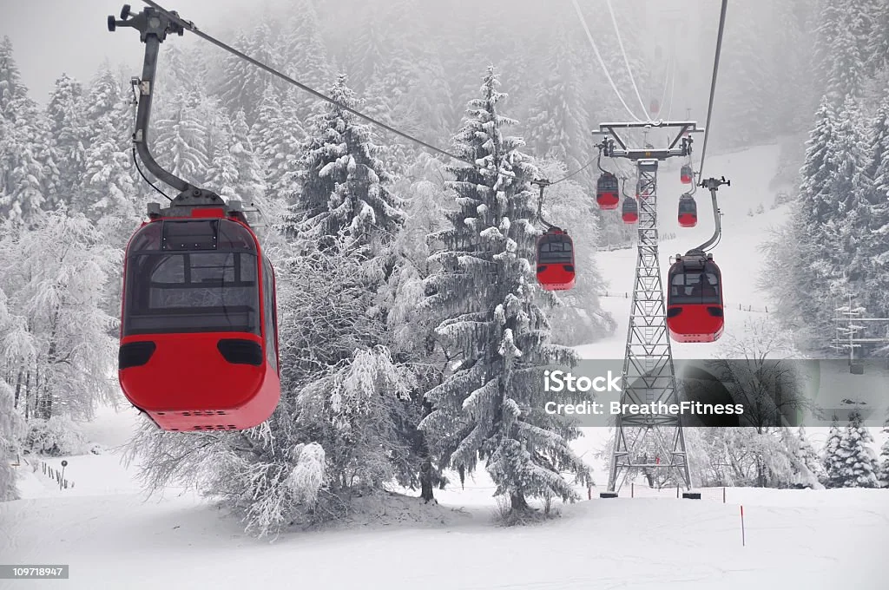

Switzerland
🔊Now i will share with you my friends my visit to the beatiful country Switzerland with its stunning natural scenery .
Why visit switzerland?
Switzerland is one of the most peaceful and beautiful countries you can ever visit. The mountains ⛰️ are breathtaking, the lakes are crystal clear 🌊, and the cities are clean and calm. The people are polite, and everything runs with perfect organization. It’s an ideal destination for anyone who loves nature, photography, or simply relaxing away from the noise.
What's the best time yo visit?
The best time to visit Switzerland depends on what you enjoy. If you love snow and skiing , winter (December to February) is perfect.

But if you prefer green landscapes🍃and hiking 🧗‍♂️, summer (June to September) is the best time. Spring is also lovely, with flowers 🌹🌼 blooming everywhere.
Top Attractions
- Zurich: A modern and clean city with a beautiful river and elegant shops.
- Interlaken: A stunning area between two lakes, perfect for adventure and photography.

- matterhorn Mountain: An iconic peak in the Alps, especially magical at sunrise.

- Geneva: A calm city full of international organizations like United nations and a huge lake.

Local Food 🍽️
- Fondue:
- A famous Swiss dish made of melted cheese served with bread

- Swiss Chocolate:
- Some of the best chocolate in the world — smooth and rich in flavo

culture
- Respect for Time:
- Swiss people value punctuality highly — always be on time
- Cleanliness
- Cleanliness is part of their lifestyle; streets are always spotless
- Rural Life & Cattle Culture🐄:
- Green mountains, small farms, and the sound of cowbells create a peaceful, calming atmosphere.
Cattle herding isn’t just a job in Switzerland; it’s a cultural tradition passed down through generations. Farmers deeply care for their animals and the nature around them. From their milk, they produce some of the world’s finest Swiss cheese.
If you visit a Swiss village, you might see farmers leading their cows through the fields or even join local festivals that celebrate the cows’ return from the mountain pastures at the end of summer — a truly heartwarming sight.

.If you want to know more about a travels Click here
.here are some instructions
.If you have any questions contact me